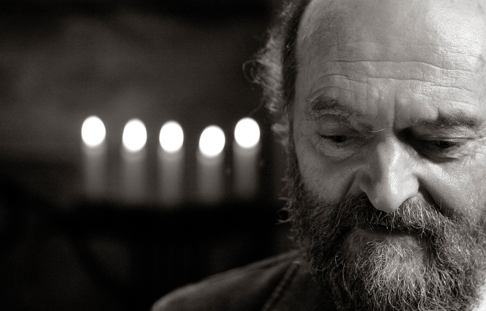
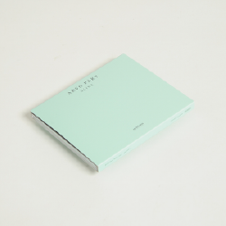
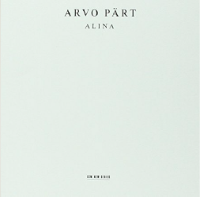
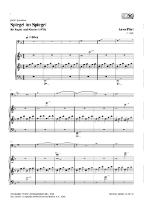
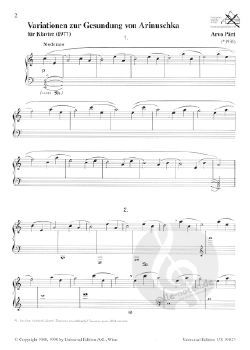

“I could compare my music to white light which contains all colours. Only a prism can divide the colours and make them appear; this prism could be the spirit of the listener.”

1. Spiegel im Spiegel, 10:36
Vladimir Spivakov, violin
Sergej Bezrodny, piano
2. Für Alina, 10:47
Alexander Malter, piano
3.Spiegel im Spiegel, 9:12
Dietmar Schwalke, violoncello
Alexander Malter, piano
4. Für Alina, 10:53
Alexander Malter, piano
5. Spiegel im Spiegel, 9:48
Vladimir Spivakov, violin
Sergej Bezrodny, piano
Arvo Pärt is a living national treasure to Estonia, and this album reveals such intimate access to his faith, sadness, and humility. Structured in five parts, Alina is a simple, chilling invocation of heartfelt desire comprised of only two movements that alternate with subtle variation. The opening lullaby of “Spiegel im Spiegel” is a gentle and melancholy embrace between Sergej Bezrodney on piano and Vladimir Spivakov on violin, where every note steps gracefully forward, as if ascending a fragile staircase. In contrast, the two movements of “Für Alina” leave a little room for structured improvisation, as the top note in each chord is left for the performer to, as Pärt puts it, “explore within themselves.” Thus, Alexander Malter deserves special recognition for breathing such mournful sweetness into these passages through every fingertip; every delicate cluster of notes shines like a distant star through a wintery black night. Malter stays on for the middle section of “Spiegel im Spiegel” and, with violoncello from Dietmar Schwalke, adds a more somber deliberateness to the piece that pianist Bezrodney shies away from in his performances (tracks one and five), instead opting for restrained tenderness. The disc closes much in the same way it opens: as if a prayer of deepest longing were just whispered into the still air. Frequent ECM producer Manfred Eicher calls upon his usual strengths, by letting the instruments speak for themselves in the right acoustical settings — less is certainly more, and the stark beauty of Alina comes partly from what we hear between the notes: such a rich and gorgeous silence. This is perhaps one of Pärt’s finest releases on compact disc, though one of his quietest. These are the tears of ghosts.
When this album was first released I was already a longtime listener of Arvo Pärt and quite accustomed to experiencing his sound in large-scale form. The grandiosity of other seminal ECM recordings, such as his popular Te Deum and epic Passio, left me with a vision of a composer with vast canvases to fill. Alina changed all that when I loaded it into my CD player, only to hear the most sublime understatement to ever issue from my speakers. Says Pärt,
“I could compare my music to white light which contains all colours. Only a prism can divide the colours and make them appear; this prism could be the spirit of the listener.”
And indeed, this album is a mise-en-abyme of airy beauty.
Tripartite structures abound in Alina.
 
The cover of Alina
First, they form the guiding principle of Pärt’s musical ideology, which embraces the triad as alpha and omega. It is no coincidence, then, that the album’s title piece marked the inauguration of his “tintinnabuli style,” which has since been his calling card, as it were, in a genre-hungry marketplace. Originally a two-minute piece, its extended treatment here peels away layers of possibility residing in the score. Recorded in the presence of the composer, each repetition seeks its own segue into silence. Second, the tracks are symmetrically ordered:
1. Spiegel im Spiegel (violin and piano)
2. Für Alina (solo piano)
3. Spiegel im Spiegel (cello and piano)
4. Für Alina (solo piano)
5. Spiegel im Spiegel (violin and piano)
This rigidity ensures that any complex posturing is shunned in favor of direct communion. Despite their sparse instrumentation, the three versions of Spiegel im Spiegel comprise Pärt’s most spacious statement ever committed to disc. Each is like an edge of his metaphorical prism, bending light into hues that one can almost taste in the listening. One might easily criticize this approach as a halfhearted attempt to fill a disc were it not for the profound indeterminacy throughout. It is in this sense that the cello in the central incarnation sighs like an exhausted organ sending its final pulses straight into the heart of a period passed in quiet humility.
Third, the album is situated at the intersection of three planes of existence: the spatial, the bodily, and the vibrational. The piano’s own resonant interior speaks precisely of its external effect, thereby establishing a striking continuity between the details of its construction and the boundless receptacle that is the listener’s mind. The music speaks, because it knows no other way of communicating. It is the voice that whispers at the edge of sleep, that ever so slightly indecipherable instinct at the heart of selfless wishes.
 
Spiegel im Spiegel(left), Für Alina(right)
“As I listen to this album again, the patter of raindrops outside my window provides a fitting backdrop to the sheer grace of its first arpeggios. This weather lends the music a liquid shield around every note, turning each into an earthbound droplet. Alina is filled with more emptiness than substance, all the while forming through that emptiness a substance far greater than its own vocabulary can express. It enacts a unique sort of transfiguration which, through the quietude of its own coalescence, ends up turning into itself.”
Reviews